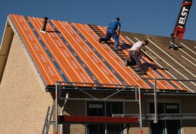

Dakisolatie SlimFix Reno+ van Isobouw
SlimFix® Reno+ onderscheidt zich door een zéér hoog isolerend vermogen dankzij een IsoBouw-innovatie in EPS-technologie. Hierdoor zijn de elementen ongekend dun met directe voordelen in verwerkingsgemak en minimalisering van de dakopbouwhoogte. Dit maakt SlimFix® Reno+ uitermate goed geschikt voor toepassing bij renovatieprojecten waar direct op een bestaand dragend dakbeschot geïsoleerd wordt.
De voordelen op een rij:
Minimale opbouwhoogte door zeer geringe diktes vanaf 39 mm.
Superieur isolerend EPSHR.
Langszijden voorzien van sponning of messing/groef ter voorkoming van koudebruggen.
Drie ingelijmde tengellatten, constructief sterk.
Gecacheerd met een thermisch reflexterende, dampopen aluminiumfolie.
Bij specificatielengte: Gratis gootdetail en-of nokafschuining mogelijk.
Geen stofhinder bij het zagen.
Licht van gewicht.
Leverbaar op lengtespecificatie en in standaardmaat 5700 mm voor extra korte levertijd.
Eenvoudig en snel te verwerken.
Ongevoelig voor vocht.
Volledig recyclebaar.
Renoveren zonder de woning te hoeven ontruimen.
Uitstekende prijs/kwaliteitverhouding.
Productinformatie
ToepassingsgebiedRenovatie-element voor het naisoleren van gordingdaken met dragend dakbeschot bij woningen en utiliteitsgebouwen, afgewerkt met schubvormige bedekking, t/m klimaatklasse 2.
Leveringsprogramma
Breedte:1000 mm (werkend).Lengte: Standaard 5700 mm.
Op specificatie:
type 1.6 en 2.0: van 3600 t/m 6000 mm.
type 2.5 t-m 7.0: van 3600 t/m 7500 mm.
Productsamenstelling
Bovenzijde: Gecacheerd met versterkte, thermisch reflecterende en dampopen aluminiumfolie met rastermotief en voorzien van 3 constructief ingelijmde houten regels 25 x 30 mmIsolatiemateriaal: Grijze isolatiekern EPSHR-SE volgens BRL 1306, met verhoogd isolerend vermogen. Langszijde uitgevoerd met sponning, kopse kanten recht.
Vergelijken
Dak
Platdakisolatie IKO EnerthermGeluid
Binnenwandsysteem HV70 Van FaayEco-Baffles Van VRK
Geluidisolatie Isolgomma Van Imbema
Gevel
BuitenisolatiegevelHoutvezelisolatie Van Gutex
Isolatie Isovlas PL Plaat
Spouwisolatie HR++ Neopixels EPS Parels
Glas
Glasfolie van HomechillHR++ Isolatieglas
Renovatieglas en Kozijnen
Vloer
Bodem afsluiting KalkkorrelsReflectiefolie Tonzon